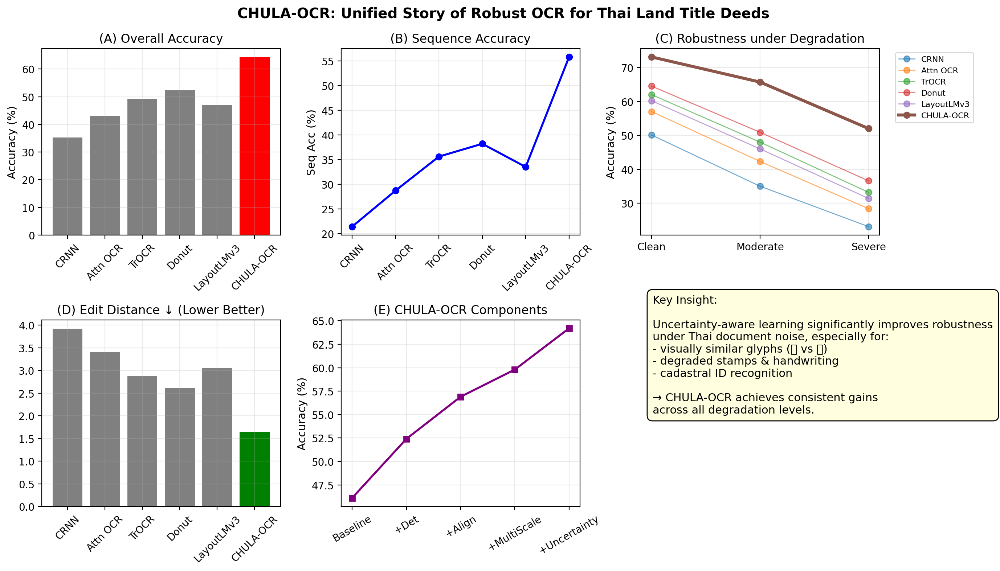

OCR in real-world legal documents remains extremely challenging due to severe degradation, handwriting overlays, stamps, and complex cadastral layouts.
In Thai land title deed digitization, even small OCR errors can lead to critical legal inconsistencies. CHULA-OCR is designed to address this gap by introducing uncertainty-aware perception.

Instead of treating OCR as deterministic prediction, CHULA-OCR models uncertainty explicitly.
Detects unreliable visual regions in degraded documents
Suppresses noisy stamps, blur, and handwriting artifacts
Maintains cadastral format consistency for legal use
Overall OCR Accuracy
Cadastral Identifier Match
Lowest Error Rate
CHULA-OCR enables scalable digitization of Thai land title deeds, supporting:
CHULA-OCR demonstrates that robust OCR for legal documents requires more than stronger models— it requires uncertainty-aware perception grounded in real-world constraints.